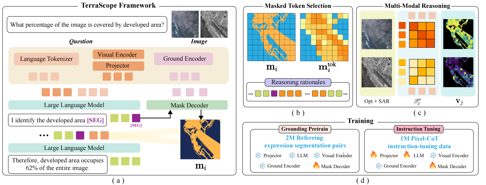
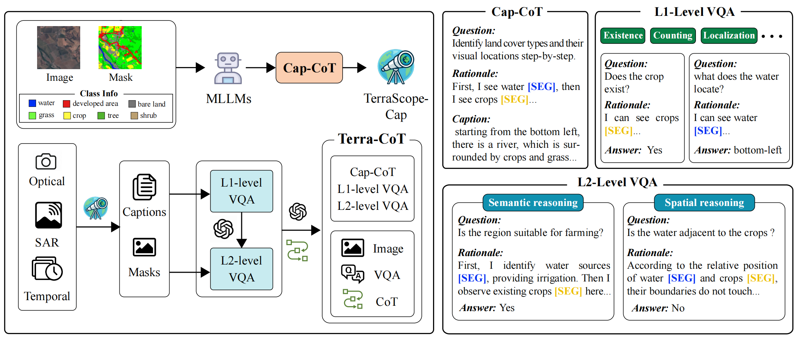
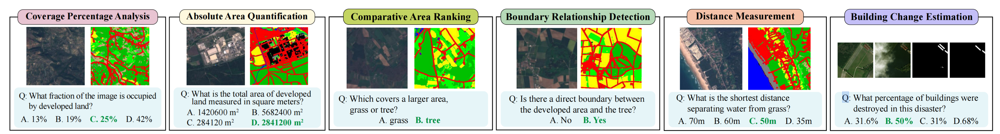
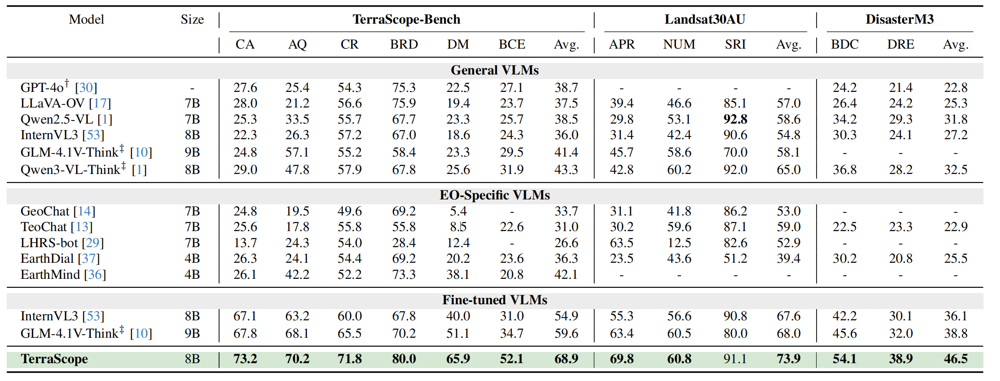

Figure 1: TerraScope performs pixel-grounded visual reasoning for diverse earth observation tasks.
Abstract
Vision-language models (VLMs) have shown promise in earth observation (EO),
yet they struggle with tasks that require grounding complex spatial reasoning
in precise pixel-level visual representations. To address this problem, we introduce TerraScope, a unified VLM that delivers pixel-grounded geospatial reasoning with two key capabilities: (1) modality-flexible reasoning: it handles single-modality inputs (optical or SAR) and adaptively fuses different modalities into the reasoning
process when both are available; (2) multi-temporal reasoning: it
integrates temporal sequences for change analysis across multiple time points. In addition, we curate Terra-CoT, a large-scale dataset containing 1 million
samples with pixel-level masks embedded in reasoning chains across multiple
sources.
We also propose TerraScope-Bench, the first benchmark for pixel-grounded
geospatial reasoning with six sub-tasks that evaluates both answer accuracy
and mask quality to ensure authentic pixel-grounded reasoning.
Experiments show that TerraScope significantly outperforms existing VLMs on pixel-grounded geospatial reasoning while providing interpretable visual evidence.
Method
We propose TerraScope, a unified vision-language framework for pixel-grounded visual reasoning in geospatial understanding. Unlike traditional VLMs that rely on language-only reasoning chains, TerraScope explicitly generates segmentation masks and grounds reasoning in the selected masked visual space.
Pixel-Grounded Chain-of-Thought: A cooperative mechanism between dual decoders that interleaves segmentation mask generation with text generation. Upon detecting [SEG] tokens, the mask decoder predicts segmentation masks, from which masked visual tokens are selected and injected back into the reasoning sequence.
Dynamic Visual Feature Extraction: Generated masks are aligned to the vision encoder's dynamic patch layout and resized to the token grid. Visual tokens covered >50% by the mask are selected, projected, and fed into the LLM to resume autoregressive generation conditioned on the KV cache.
Multi-Modal & Temporal Reasoning: For optical-SAR pairs, a text-guided, token-level modality selection mechanism computes cross-attention relevance scores to adaptively choose features from the more informative modality at each spatial position. For temporal sequences, explicit temporal indicators ("Image: ti") before each [SEG] token enable frame-specific mask decoding.
Two-Stage Training: Stage 1 trains on 2M referring expression segmentation pairs for basic grounding; Stage 2 fine-tunes on 1M Terra-CoT samples with a combined language modeling loss and segmentation loss (Dice + pixel-wise cross-entropy).

Figure 2: Overview of the TerraScope framework.
Terra-CoT Dataset
Existing EO datasets provide either segmentation labels or VQA pairs, but not both with reasoning traces. We address this with a two-stage automated pipeline to curate large-scale pixel-grounded reasoning data.
Grounded Captioning with Chain-of-Thought (Cap-CoT): We prompt a large multimodal model with images where land-cover categories are highlighted using colored masks and labeled accordingly, producing 250K captioning samples with explicit pixel-grounded reasoning traces. An intermediate annotator, TerraScope-Cap, is then trained to scale this to unlabeled imagery.
Hierarchical Data Synthesis — Level 1 (Basic Spatial Grounding): Template-based questions for randomly selected categories, covering fundamental spatial tasks such as existence verification, object counting, localization, area quantification, and boundary detection, each paired with pixel-grounded reasoning traces.
Hierarchical Data Synthesis — Level 2 (Complex Multi-Step Reasoning): An LLM composes multiple L1 questions into complex reasoning tasks of two types: L2-Spatial (cross-entity relationship inference) and L2-Semantic (domain knowledge beyond visual observation).
This hierarchical process produces 1M Terra-CoT samples with diverse reasoning abilities across optical, SAR, and temporal sources covering global regions.

Figure 3: Overview of the Terra-CoT data synthesis pipeline.
TerraScope-Bench
Existing EO benchmarks emphasize coarse-grained tasks like scene classification and image captioning, failing to assess fine-grained spatial reasoning. We introduce TerraScope-Bench, a benchmark of 3,837 carefully curated samples from test sets of existing datasets, designed to evaluate pixel-level spatial understanding.
Six Task Categories: Coverage Percentage Analysis (855), Absolute Area Quantification (855), Distance Measurement (129), Comparative Area Ranking (855), Boundary Relationship Detection (855), and Building Change Estimation (288).
Automated QA Generation: Spatial properties (coverage ratios, absolute areas, inter-object distances, boundary relationships) are computed from segmentation masks to derive ground-truth answers. Questions are generated via templates, rephrased by an LLM with plausible distractors for multiple-choice format, and filtered by human experts.
Dual Evaluation: Unlike existing benchmarks that only assess final answer accuracy, TerraScope-Bench evaluates both response correctness and spatial reasoning quality using IoU-based segmentation metrics, verifying whether models attend to the correct regions during reasoning.

Figure 4: Overview of TerraScope-Bench task categories and evaluation pipeline.
Experiments
We evaluate TerraScope against general VLMs, EO-specific VLMs, and fine-tuned VLMs across three benchmarks:
TerraScope-Bench (optical only): Six fine-grained spatial reasoning tasks — Coverage Analysis, Area Quantification, Comparative Ranking, Boundary Relationship Detection, Distance Measurement, and Building Change Estimation.
Landsat30AU: Land-use understanding tasks including Appearance Recognition, Numerical Reasoning, and Spatial Relationship Inference.
DisasterM3: Disaster assessment tasks covering Building Damage Classification and Damage Ratio Estimation.
TerraScope (8B) achieves 68.9% average accuracy on TerraScope-Bench, 73.9% on Landsat30AU, and 46.5% on DisasterM3, consistently outperforming all baselines including proprietary models like GPT-4o and reasoning models like GLM-4.1V-Think.

Table 1: Quantitative performance of TerraScope on TerraScope-Bench, Landsat30AU, and DisasterM3.
Citation
@article{shu2026terrascope,
title={TerraScope: Pixel-Grounded Visual Reasoning for Earth Observation},
author={Shu, Yan and Ren, Bin and Xiong, Zhitong and Zhu, Xiao Xiang and Demir, Beg{\"u}m and Sebe, Nicu and Rota, Paolo},
journal={arXiv preprint arXiv:2603.19039},
year={2026}
}